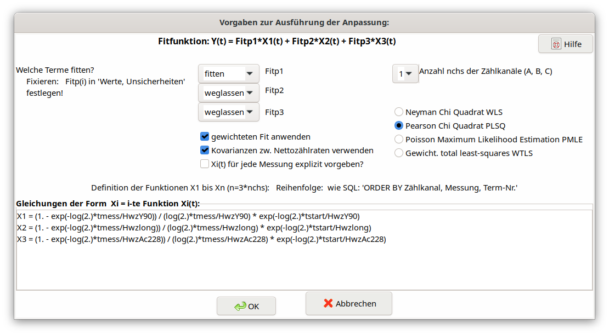

5.11. Dialog Definition of the decay curve model¶
5.11.1. One single output quantity defined¶
The following picture gives an overview of the structure of the dialog.
In this dialog the Linear Least squares method is presented for the case of more complex Y-90 decay-curves \(Y\left( t_{k} \right)\) (net counting rates)
\(Y\left( t_{k} \right) = a_{1} \cdot X_{1}\left( t_{k} \right) + \ a_{2} \cdot X_{2}\left( t_{k} \right) + \ a_{3} \cdot X_{3}\left( t_{k} \right)\)
The three terms describe different radionuclide decay contributions to the net counting rates and are dependent on the time t but also on the counting time(s).
For the case of a Y-90 decay curve the meaning of the three terms is as follows:
\[a_{1} X_{1}(t_{k})\]
|
Represents the decay of the Y-90 component; \(a_{1}\) (in \(s^{-1}\)) is the Y-90 counting rate contribution at the time of Y/Sr separation which is to be fitted. |
\[a_{2} X_{2}(t_{k})\]
|
Represents the (practically) constant counting rate contribution from an impurity due to a long-lived unidentified radionuclide (half-life assumed to be infinite). \(X_{2}(t_{k})\) is set equal to 1. An example of this is Th-234; if this is known or identified, its half-life can be specified (in the TAB “Values, uncertainties”); \(a_{2}\) (in \(s^{-1}\)) gives the size of this contribution (to be fitted). |
\[a_{3} X_{3}(t_{k})\]
|
Represents the decay of the relatively short-lived Ac-228 which can occur as an impurity in the Y oxalate source; this term may also be used if the presence of short-lived contaminations of the counting source by short-lived Radon decay products; \(a_{3}\) (in \(s^{-1}\)) gives the size of this contribution (to be fitted). |
The user can choose whether the second and/or the third term shall be used in the model.
Furthermore, it may be chosen whether the fitting shall be done with statistical weighting with the inverse variances of the net counting rates - or non-weighted. The internal use of covariances of measured net counting rates may be de-selected for testing.
The type of the fitting procedure can be selected from four variants: WLS, PLSQ, PMLE und WTLS. The more complex but more time-consuming total least squares procedure (WTLS) is able to take uncertainties of the \(X_{i}\left( t_{k} \right)\) values and covariances between them into account. See also Chi-square options.
A checkbox within this dialog allows to select instead of the simpler least squares analysis (WLS) the more complex but also more time-consuming general least squares procedure (WTLS). The latter is able to consider directly also uncertainties of the \(X_{i}\left( t_{k} \right)\) values and covariances between them.
In most cases, the term functions Xi(t) between different measurements only differ by the time difference to the time of the Sr/Y separation (parameter t: tstart). Therefore, these functions Xi(t) needed to be given only once, for the first measurement (in case of more than one counting channel: for the first measurement of each counting channel).
However, values of the counting efficiencies contained therein may now differ from measurement to measurement. In this case, which can be selected by a new checkbox, all term functions for each measurement have to be input explicitly. This increases the length of the argument list of the Linfit Call by additional values of counting efficiencies;
since version 2.4.24 these detection efficiency parameters need no longer be specified explicitly within the Linfit call. Look at the new example project Sr89-Sr90_IAEA_AQ-27_2013_V2_EN.txp which demonstrates this.
In a text field of the dialog the equations for the three functions \(X_{i}\left( t_{k} \right)\) can be defined. For the above example of the analysis of a Y-90 decay-curve they have to be defined as follows:
X1 = (1. - exp(-log(2.)*tmess/HwzY90)) / (log(2.)*tmess/HwzY90) \*
exp(-log(2.)*tstart/HwzY90)
X2 = (1. - exp(-log(2.)*tmess/Hwzlong)) / (log(2.)*tmess/Hwzlong) \*
exp(-log(2.)*tstart/Hwzlong)
X3 = (1. - exp(-log(2.)*tmess/HwzAc228)) / (log(2.)*tmess/HwzAc228) \*
exp(-log(2.)*tstart/HwzAc228)
Here, tmess and tstart are counting time and the time durations between Y-90/Sr-90 separation and the starts of the measurements, respectively. In fact, both variables are arrays and their values for each single measurement may be defined in a special dialog. Hwzxxx are the radionuclide specific half-lives. The formulae given above take radioactive decay during the measurements into account.
With using the new decay function fd() the above equations are shorter:
X1 = fd(tstart, tmess, log(2)/HwzY90)
X2 = fd(tstart, tmess, log(2)/Hwzlong)
X3 = fd(tstart, tmess, log(2)/HwzAc228)
5.11.2. Extension to two or three output quantities¶
Extension to two or three output quantities
By the simultaneous measurement of for instance Sr-90, Sr-89, and may be also of Sr-85, with a LSC counter the contributions of these radionuclides to the counting rates in two or three counting channels (energy regions), designated as A, B and C, are determined. Further details may be taken from the report AKU (2008), which is dealing with modern methods of the Sr-89/Sr-90 determination.
The number of counting channels (nchs) can be selected in the dialog. In the present case up to three decay curves \(Y_{A}\left( t_{k} \right)\), \(Y_{B}\left( t_{k} \right)\) and \(Y_{C}\left( t_{k} \right)\) have to be considered. Then up to three model equations are used instead of only one:
\(Y_{A}\left( t_{k} \right) = a_{1} \cdot X_{A1}\left( t_{k} \right) + \ a_{2} \cdot X_{A2}\left( t_{k} \right) + \ a_{3} \cdot X_{A3}\left( t_{k} \right)\)
\(Y_{B}\left( t_{k} \right) = a_{1} \cdot X_{B1}\left( t_{k} \right) + \ a_{2} \cdot X_{B2}\left( t_{k} \right) + \ a_{3} \cdot X_{B3}\left( t_{k} \right)\)
\(Y_{C}\left( t_{k} \right) = a_{1} \cdot X_{C1}\left( t_{k} \right) + \ a_{2} \cdot X_{C2}\left( t_{k} \right) + \ a_{3} \cdot X_{C3}\left( t_{k} \right)\)
Now, the fitting parameters \(a_{i}\ \)represent activities instead of counting rates in the first example; see above: one single output quantity. These are automatically inserted by the program into the list of symbols as new symbols FITP1, FITP2 and FITP3.
Within the program, this case is reduced to that of one single decay curve by concatenating the three fields of counting rates (in the order A, B and C). The same applies to the independent decay functions.
Counting rates:
\(Y\left( t_{k} \right) = \left\{ \begin{array}{r} Y_{A}\left( t_{k} \right) \\ Y_{B}\left( t_{k} \right) \\ Y_{C}\left( t_{k} \right) \end{array} \right\}\)
Decay functions: Input within the dialog field for the terms:
\[X_{A1}\left( t_{k} \right)\]
|
\[X1 = \ldots\]
|
|---|---|
\[X_{A2}\left( t_{k} \right)\]
|
\[X2 = \ldots\]
|
\[X_{A3}\left( t_{k} \right)\]
|
\[X3 = \ldots\]
|
\[X_{B1}\left( t_{k} \right)\]
|
\[X4 = \ldots\]
|
\[X_{B2}\left( t_{k} \right)\]
|
\[X5 = \ldots\]
|
\[X_{B3}\left( t_{k} \right)\]
|
\[X6 = \ldots\]
|
\[X_{C1}\left( t_{k} \right)\]
|
\[X7 = \ldots\]
|
\[X_{C2}\left( t_{k} \right)\]
|
\[X8 = \ldots\]
|
\[X_{C3}\left( t_{k} \right)\]
|
\[X9 = \ldots\]
|
For a better understanding of this application, the reader is referred
to the example project DWD-LSC-3kanal-V2.txp, which corresponds to a
quite detailed presentation of the equations in the report AKU (2008;
page 160). For this application, the nine decay functions are defined as
follows:
X1 = eSr89A \* (1. - exp(-lamSr89*tmess)) / (lamSr89*tmess) \*
exp(-lamSr89*(tAS+tstart))
X2 = eSr90A \* (1. - exp(-lamSr90*tmess)) / (lamSr90*tmess) \*
exp(-lamSr90*(tAS+tstart)) +eY90A \* &
lamY90/(tmess*(lamY90-lamSr90)) \*(
-exp(-lamSr90*(tAS+tstart))/lamSr90*(exp(-lamSr90\* &
tmess)-1.)+exp(-lamY90*(tAS+tstart))/lamY90*(exp(-lamY90*tmess)-1.) )
X3 = eSr85A \* (1. - exp(-lamSr85*tmess)) / (lamSr85*tmess) \*
exp(-lamSr85*(tAS+tstart))
X4 = eSr89B \* (1. - exp(-lamSr89*tmess)) / (lamSr89*tmess) \*
exp(-lamSr89*(tAS+tstart))
X5 = eSr90B \* (1. - exp(-lamSr90*tmess)) / (lamSr90*tmess) \*
exp(-lamSr90*(tAS+tstart)) +eY90B \* &
lamY90/(tmess*(lamY90-lamSr90)) \*(
-exp(-lamSr90*(tAS+tstart))/lamSr90*(exp(-lamSr90\* &
tmess)-1.)+exp(-lamY90*(tAS+tstart))/lamY90*(exp(-lamY90*tmess)-1.) )
X6 = eSr85B \* (1. - exp(-lamSr85*tmess)) / (lamSr85*tmess) \*
exp(-lamSr85*(tAS+tstart))
X7 = eSr89C \* (1. - exp(-lamSr89*tmess)) / (lamSr89*tmess) \*
exp(-lamSr89*(tAS+tstart))
X8 = eSr90C \* (1. - exp(-lamSr90*tmess)) / (lamSr90*tmess) \*
exp(-lamSr90*(tAS+tstart)) +eY90C \* &
lamY90/(tmess*(lamY90-lamSr90)) \*(
-exp(-lamSr90*(tAS+tstart))/lamSr90*(exp(-lamSr90\* &
tmess)-1.)+exp(-lamY90*(tAS+tstart))/lamY90*(exp(-lamY90*tmess)-1.) )
X9 = eSr85C \* (1. - exp(-lamSr85*tmess)) / (lamSr85*tmess) \*
exp(-lamSr85*(tAS+tstart))
Herein, decay constants lamNuclide instead of half-lives are used. The symbols beginning with e represent for the considered radionuclides their detection probabilities in the counting channels A, B and C.
Using the new decay function fd(), the above equations are shorter:
X1 = eSr89A \* fd(tAS+tstart,tmess,lamSr89)
X2 = eSr90A \* fd(tAS+tstart,tmess,lamSr90) + &
eY90A \* lamY90/(lamY90-lamSr90) \* ( fd(tAS+tstart,tmess,lamSr90) -
fd(tAS+tstart,tmess,lamY90) )
X3 = eSr85A \* fd(tAS+tstart,tmess,lamSr85)
X4 = eSr89B \* fd(tAS+tstart,tmess,lamSr89)
X5 = eSr90B \* fd(tAS+tstart,tmess,lamSr90) + &
eY90B \* lamY90/(lamY90-lamSr90) \* ( fd(tAS+tstart,tmess,lamSr90) -
fd(tAS+tstart,tmess,lamY90) )
X6 = eSr85B \* fd(tAS+tstart,tmess,lamSr85)
X7 = eSr89C \* fd(tAS+tstart,tmess,lamSr89)
X8 = eSr90C \* fd(tAS+tstart,tmess,lamSr90) + &
eY90C \* lamY90/(lamY90-lamSr90) \* ( fd(tAS+tstart,tmess,lamSr90) -
fd(tAS+tstart,tmess,lamY90) )
X9 = eSr85C \* fd(tAS+tstart,tmess,lamSr85)
The contribution of the fourth radionuclide, Y-90, which is in-growing from the decay of Sr-90, is attributed for by additional terms with eY90X in the expressions for X2, X5 and X8.
If the same calibration activity Acal of a radionuclide was used for the efficiency calibration of the two to three energy windows, these efficiencies are correlated. Their covariances, pair-wise given by
\(cov\left( \varepsilon_{N},\ \varepsilon_{M} \right) = \varepsilon_{N}\ \varepsilon_{M}\ u_{rel}^{2}(A_{cal})\)
are to be inserted for each pair of energy windows N and M, separately for the present radionuclides, in the covariance grid under the TAB „Values, uncertainties“.
5.11.3. Organizing of the Xi Functions¶
number of Xi formulae = (number of counting channels) x (number of applied output quantities)
(applied output quantities: fitting parameters, for which “fit“ or “fixed“ was selected)
or
number of Xi formulae = (number of measurements) x (number of Xi formulae) x x (number of counting channels)
(if a formulae (Xi) is defined explicitly for each of the measurements)
Wichtig
The prescribed sequence of the Xi formulae is indicated in the following two examples. It formally corresponds to the sequence which would be obtained by an SQL statement:
“ORDER BY counting channel, number of measurements, number of output quantity”.
Example 1: Case a): 2 counting channels, 4 measurements, 3 output quantities; the Xi(t) differ between measurements
counting channel |
measurement No. |
index of X i (t) |
running No. |
|---|---|---|---|
1 |
1 |
1 |
1 |
1 |
1 |
2 |
2 |
1 |
1 |
3 |
3 |
1 |
2 |
1 |
4 |
1 |
2 |
2 |
5 |
1 |
2 |
3 |
6 |
1 |
3 |
1 |
7 |
1 |
3 |
2 |
8 |
1 |
3 |
3 |
9 |
1 |
4 |
1 |
10 |
1 |
4 |
2 |
11 |
1 |
4 |
3 |
12 |
2 |
1 |
1 |
13 |
2 |
1 |
2 |
14 |
2 |
1 |
3 |
15 |
2 |
2 |
1 |
16 |
2 |
2 |
2 |
17 |
2 |
2 |
3 |
18 |
2 |
3 |
1 |
19 |
2 |
3 |
2 |
20 |
2 |
3 |
3 |
21 |
2 |
4 |
1 |
22 |
2 |
4 |
2 |
23 |
2 |
4 |
3 |
24 |
Example 2: case b), like example 1, but the Xi(t) do NOT differ between measurements:
counting channel |
measurement No. |
index of X i (t) |
running No. |
|---|---|---|---|
1 |
1 |
1 |
1 |
1 |
1 |
2 |
2 |
1 |
1 |
3 |
3 |
2 |
1 |
1 |
4 |
2 |
1 |
2 |
5 |
2 |
1 |
3 |
6 |
5.11.4. One parameter excluded from fitting¶
There are three options for the terms \(a_{j} \cdot X_{j}\left( t_{k} \right)\) :
The option “fixed“ became necessary by using a Sr-85 tracer within the Sr-90/Sr-89 analysis such that the Sr-85 activity is not subject to fitting but the chemical Sr yield is determined by an independent gamma measurement of Sr-85. This means that the Sr-85 contribution to the beta counting rates can be calculated separately. Select the Sr-85 option to “fix“ for enabling this case.
As the fitting routine cannot include the uncertainty of the Sr-85 activity (or its count rate), a special treatment was inferred. At first, for each of the gross count rate measurements the Sr-85 beta counting rate (and its uncertainty) is calculated and subtracted from the already available net counting rate \(R_{n}\left( t_{i} \right)\).
The symbols are: \(A_{85g},\) the Sr-85 activity obtained by gamma-spectrometry;\(\varepsilon_{85b}\) , the Sr-85 beta counting efficiency and \(\lambda_{85}\) the Sr-85 decay constant.
The function \(X_{3}\) is determined by that equation, which the user defines as equation for X3 within the dialog for setting up a decay curve model. An example:
X3 = ASr85_Gam * eSr85 * (1. - exp(-lamSr85*tmess)) / (lamSr85*tmess) * exp(-lamSr85*(tAS+tstart))
The associated fitting parameter \(a_{3}\) (to be fixed) is internally set to the value 1. Collecting the input quantities \(A_{85g}\), \(\varepsilon_{85b}\) and \(\lambda_{85}\) into a vector \(z\), i.e. \(z = \left( A_{85g},\varepsilon_{85b},\lambda_{Sr85} \right)^{T}\), allows to calculate the covariance matrix components needed for uncertainty propagation as follows:
diagonal values:
\(u^{2}\left( R_{nk}\left( t_{i} \right) \right) = u^{2}\left( R_{n}\left( t_{i} \right) \right) + \sum_{j = 1}^{3}\left( \frac{\partial R_{nk}\left( t_{i} \right)}{\partial z_{j}} \right)^{2}u^{2}\left( z_{j} \right)\)
non-diagonal values:
\(u\left( R_{nk}\left( t_{i} \right),R_{nk}\left( t_{k} \right) \right) = {u\left( R_{nk}\left( t_{k} \right),R_{nk}\left( t_{i} \right) \right) = u}^{2}\left( R_{BG} \right) + \sum_{j = 1}^{3}{\frac{\partial R_{nk}\left( t_{i} \right)}{\partial z_{j}}\ \frac{\partial R_{nk}\left( t_{k} \right)}{\partial z_{j}}}u^{2}\left( z_{j} \right)\)
The first term within the last equation does only occur if for calculating the net count rates \(R_{n}\left( t_{i} \right)\) always the same value of the background contribution is used (abbreviated here as \(R_{BG}\)). The partial derivatives are calculated numerically.
The remaining unknown components for Sr-90 and Sr-89 are fitted to these Sr-85-corrected net counting rates (including their covariance matrix).
The symbols collected above into the vector \(z\) must be included in the list of arguments of the call to Linfit, for example (note, that the equation for cSr85 is a dummy, i.e. only a place-holder):
cSr90 = Fitp1 \* PhiSr90
cSr89 = Fitp2 \* PhiSr89
cSr85 = Fitp3 \* 1
rd = Linfit(1, Rbl, **ASr85_Gam**, **eSr85**, eSr90, eSr89, eY90,
**lamSr85**, lamSr90,
lamSr89, lamY90, tmess, tstart )
phiSr90 = 1 / (etaSr*Vol) \* exp(lamSr90 \* (tBS - tAS))
phiSr89 = 1 / (etaSr*Vol) \* exp(lamSr89 \* (tBS - tAS))
X1 = eSr90 \* (1. - exp(-lamSr90*tmess)) / (lamSr90*tmess) \*
exp(-lamSr90*(tAS+tstart)) + &
eY90 \* lamY90/(tmess*(lamY90-lamSr90)) \* &
( -exp(-lamSr90*(tAS+tstart))/lamSr90*(exp(-lamSr90*tmess)-1.) &
+exp(-lamY90*(tAS+tstart))/lamY90*(exp(-lamY90*tmess)-1.) )
X2 = eSr89 \* (1. - exp(-lamSr89*tmess)) / (lamSr89*tmess) \*
exp(-lamSr89*(tAS+tstart))
X3 = ASr85_Gam \* eSr85 \* (1. - exp(-lamSr85*tmess)) /
(lamSr85*tmess) \* exp(-lamSr85*(tAS+tstart))
Bemerkung
Since version 2.4.24 the equation for rd shall be shortened to:
rd = Linfit(1, Rbl, tmess, tstart)